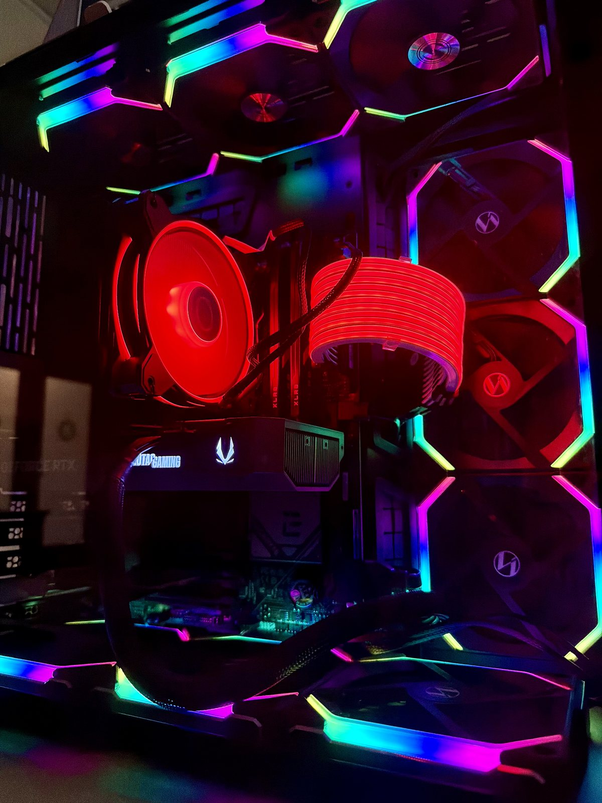

Hardware
Every component in the rack and on the desk. Hover (or tap) a card — the ↻ corner flips it to its role in the network.

Legion 7i
Manages the entire network. Accesses admin interfaces.
Hosts virtual machines with Kali Linux and Windows to attack vulnerable VMs.
Runs attacks that simulate a real-world threat actor.

Ryzen 5 7600X · RTX 5070 · 32 GB RAM · 2 TB SSD
Used for Security Information and Event Management, log aggregation, and threat detection. Hosts 6 vulnerable VMs.

USW-Pro-Max-16-PoE UniFi Layer 3 Switch
Handles all VLAN tagging so each zone stays separate at the network level. A SPAN mirror port copies all traffic from every VLAN and sends it straight to Security Onion.

CyberPower UPS
Hardware protection, surge protection, and battery backup for the entire rack.

Netgate 2100 · Firewall / Router / Gateway
Gatekeeper of the entire network — nothing moves without going through here first. Handles all inter-VLAN routing and firewall rules, so I control exactly what can talk to what. Enterprise grade; all attacks are logged here before they reach targets.

49" Curved Monitor
For multi-pane tasks such as SIEM monitoring — running Wazuh, Security Onion, and ELK dashboards side by side.

Patch Panel
Makes VLAN trunk and access connections clean and intentional instead of a tangled mess. Every connection is labeled for troubleshooting.

Rack Cooling & Airflow Panel
Maintains safe temperatures for the hardware and displays the temperature inside the server rack.

Server Rack
Houses my pfSense firewall, UniFi switch, and shelf in one clean wall-mounted enclosure. When complete it looks like it belongs in a data center.

Triple Arm Mount
Mounts my 32" monitor vertically next to the 49" monitor, and holds my laptop in a laptop tray.

JetKVM
Provides out-of-band remote access to machines at the BIOS level — full keyboard, video, and mouse control over any device without needing an OS or network connection. Essential for managing headless servers like the Proxmox host and recovering machines that have become unreachable through normal remote access.